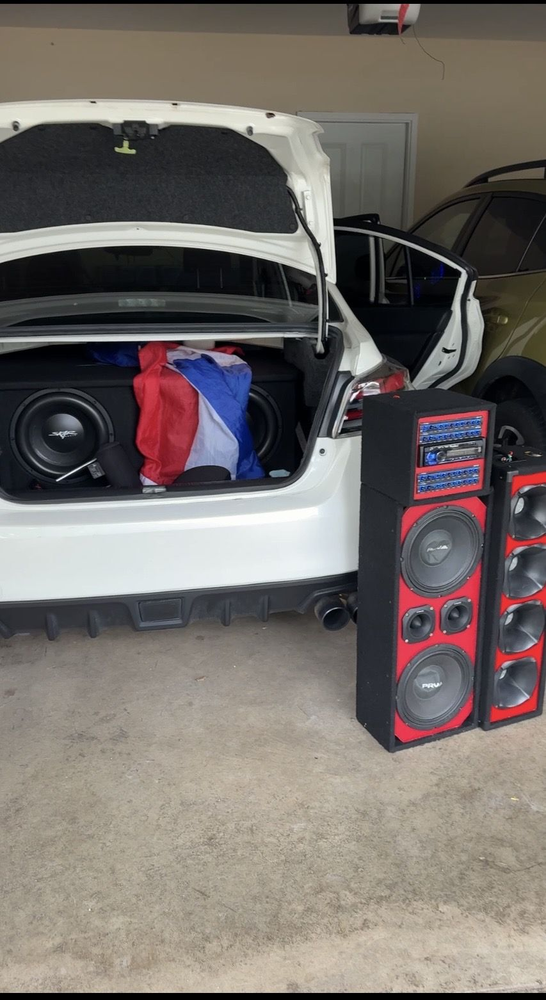
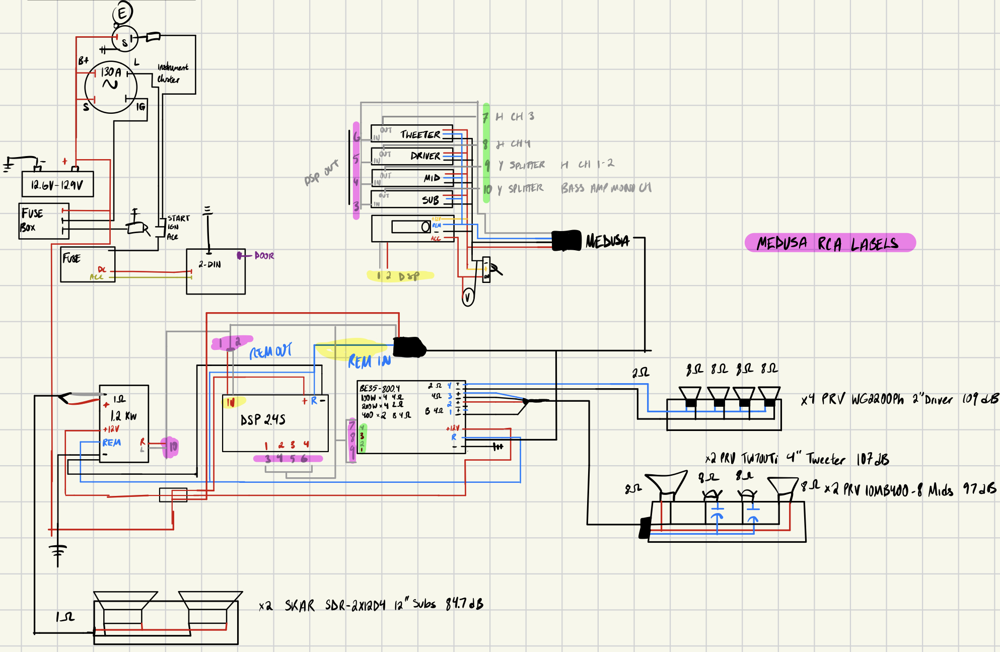

PERSONAL PROJECT
Car Audio System: Design, Wiring & Tuning
I designed and wired a multi-amplifier audio system for my car, built a horn box for it, upgraded the charging system to handle the load, and tuned it with an oscilloscope.
It’s built as a Dominican voceteo setup: alongside the subwoofers in the trunk, two speaker boxes sit outside the car, and a radio box with its own head unit and EQs rides on the center console. The whole thing is meant to be heard outside the car, not just inside it.
POWER130 A alternator · Big 3 upgrade
AMPLIFIERS1.2 kW mono (1 Ω) + 4-channel
PROCESSINGDSP 2.4S + EQs
TUNINGOscilloscope gain setting

What I did
Designed & wiredThe whole system, from the battery and alternator through the DSP to both amps and every speaker.
BuiltThe horn box.
ModifiedMounted the tweeters in the main speaker box.
UpgradedThe car's charging system with a Big 3 upgrade.
TunedAmp gains and DSP settings, verified on an oscilloscope.
BoughtThe subwoofer enclosure and the main speaker box.
How it grew
- Stock radioStarted from the factory head unit's signal path.
- Second sourceAdded the radio box, a second head unit with its own EQs that sits on the center console, so the system can run from either source.
- Electrical upgradeDid the Big 3: heavier-gauge cable from alternator to battery positive, battery negative to chassis, and engine block to chassis ground, so voltage holds up when the amps pull hard on bass notes.
- ExpansionBuilt the horn box, mounted the tweeters, and wired everything through a DSP that splits the signal into tweeter, driver, mid and sub bands for a 1.2 kW mono sub amp and a 4-channel amp.
- TuningSet each amp's gain on an oscilloscope by finding the point where the signal begins to clip and staying just below it, instead of going by ear. That protects the speakers and gets clean power from every channel.
The wiring diagram
I drew the full system before wiring it: power and fusing from the battery and 130 A alternator, remote turn-on from the ignition, the signal path through the DSP and splitters, and how each amp channel maps to the speakers, including the capacitors on the horns.
